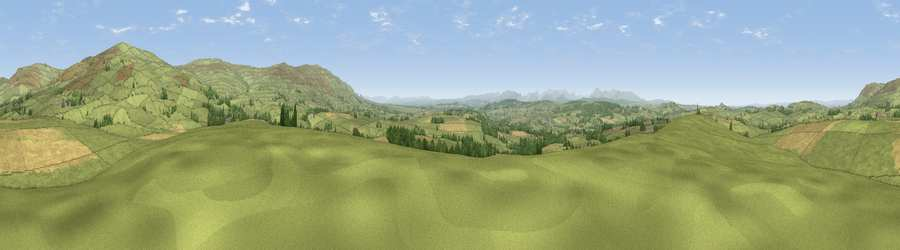

Scales Rigg
#5434 in England · top 18% of its area beats it · near RenwickThe view, rendered

A 360° render of this exact spot computed from the terrain model, tree cover and land cover — summer colours, afternoon light, calibrated against photographs of famous viewpoints. Real trees, hedges and buildings will differ in detail.
The panorama
Grey silhouette: terrain skyline in each direction (720 bearings, Earth curvature and refraction included). Dashed green: skyline with trees (+15 m) and buildings (+8 m) as obstacles. Blue strip: how far the ground is visible on each bearing.
Where the view opens
Wedge length = distance to the farthest visible ground on that bearing (vegetation-aware). Rings at 10, 25 and 50 km.
What fills the view
80% grassland · 14% cropland · 6% woodland
Angular shares of the visible panorama (visual magnitude), not map area. Landscape diversity 0.28 (0–1 Shannon).
Key numbers
More beautiful places nearby
The staircase of upgrades: each row has a higher view potential than everything closer. Driving times are estimates from straight-line distance, calibrated against real road routing — check an actual route before setting out.
| Place | Direction | Drive | Score |
|---|---|---|---|
| Viewpoint near Renwick | NNE · 4 km | ~9 min | 74.0 |
| Thack Moor | NE · 4 km | ~10 min | 77.1 |
| Viewpoint near Melmerby | SE · 8 km | ~17 min | 78.1 |
| Viewpoint near Cumrew | NNW · 9 km | ~17 min | 78.8 |
| Barrock Fell | WNW · 12 km | ~22 min | 81.1 |
| Viewpoint near Watermillock | SSW · 25 km | ~41 min | 82.6 |
| Viewpoint near Watermillock | SSW · 26 km | ~41 min | 83.5 |
| Skiddaw South Top | WSW · 35 km | ~53 min | 85.8 |
54.78440, -2.65556 · source: dobih hill · position refined by local search. Computed location — check access rights before visiting.